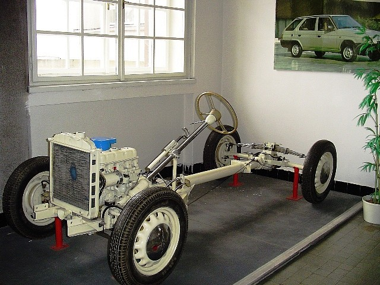
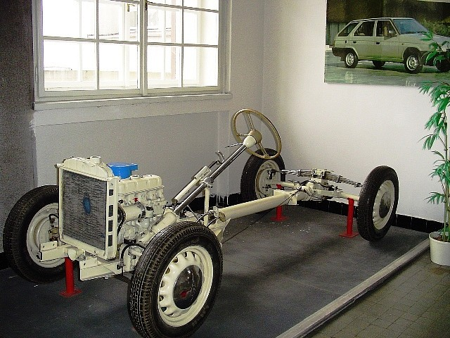

Aktuality
Přijímací řízení – časté dotazy
3.5. 2022 Václav BohataMůj syn/dcera se nedostal/a na vaši školu, v pořadí je „pod čarou“. Přesto má o vaši školu zájem nadále. Co máme dělat?
Do 3 pracovních dnů po obdržení rozhodnutí o nepřijetí ke studiu je třeba podat osobně v sekretariátě školy či poštou na adresu školy odvolání proti nepřijetí ke studiu.
Pokud jste se dostali na jinou školu, tak vám na té druhé škole běží zákonná lhůta 10 pracovních dní pro uplatnění zápisového lístku. Nejpozději na konci této lhůty doporučujeme, pokud jsme mezitím kladně nevyřídili vaše odvolání, zápisový lístek dát na druhou školu.
Pokud v rámci autoremedury kladně vyřídíme vaše odvolání, budete mít zase 10 pracovních dní pro odevzdání zápisového lístku u nás. Pokud jste mezitím už zápisový lístek odevzdali na jiní škole, je její povinností vám ho vrátit, pokud ukážete naše rozhodnutí o přijetí na základě kladně vyřízeného odvolání.
Jaká je šance na kladné vařízení našeho odvolání proti nepřijetí ke studiu?
U oboru Strojírenství a Dopravní prostředky stoprocentní. V rámci tzv. autoremedury může ředitel školy změnit svoje rozhodnutí tehdy, pokud původně přijatý uchazeč uplatní zápisový lístek na druhé škole. Už nyní víme, že pokud si podáte na tyto dva obory odvolání, bude kladně vyřízeno během několika dní.
U oboru Informační technologie máme velký převis uchazečů, ale už nyní víme, že kolem 20 uchazečů „pod čarou“ v rámci autoremedury asi budeme moci přijmout. Zde ale budete určitě čekat déle než u výše jmenovaných obor
Informace k přijímacímu řízení
17.3. 2022 Věra SvárovskáDnes byl uchazečům i zákonným zástupcům uchazečů o studium na naší škole odeslán email s pozvánkou k jednotné přijímací zkoušce (JPZ).
Emaily byly odeslány na adresy uvedené v přihláškách.
V nejbližších dnech na stejné adresy odešleme i informace k přijímacímu řízení do 1. ročníku.
Pokud Vám očekávaný email nepřišel, prosím kontaktujte sekretariát školy a situaci vyřešíme. Mohlo dojít k chybě v zápisu emailové adresy.
Vyhlášení prvního kola přijímacího řízení
13.1. 2022 Václav BohataPodle zákona č.561/2004 Sb., o předškolním, základním, středním, vyšším odborném a jiném vzdělávání (školský zákon) v platném znění, vyhlášky č. 353/2016 Sb., o přijímacím řízení ke střednímu vzdělávání, ve znění pozdějších předpisů a zákona č. 500/2004 Sb., správní řád, v platném znění
vyhlašuji
PRVNÍ KOLO PŘIJÍMACÍHO ŘÍZENÍ PRO ŠKOLNÍ ROK 2022 – 2023
k dennímu studiu ve Střední průmyslové škole, Mladá Boleslav, Havlíčkova 456 do prvního ročníku oborů:
| Název ŠVP | Název a kód oboru | Počet žáků |
|---|---|---|
| IT systémy ve strojírenství | Strojírenství 23-41-M/01 | 60 |
| Informační technologie | Informační technologie 18-20-M/01 | 60 |
| Management a provoz silniční dopravy | Dopravní prostředky 23-45-M/01 | 30 |
Úspěch v krajském kole
30.3. 2022 Ludmila RůžičkováPo druhém místě v okresním kole recitační soutěže následuje další úspěch, tentokrát v krajském kole, které proběhlo 26.3. 2022 v Kutné Hoře. Vladimír Šebesta, student 3.Cs, obsadil krásné čtvrté místo. Blahopřejeme!
Informační technologie
Obor připravuje absolventy pro široké uplatnění v oboru IT. Příklady uplatnění absolventů: správce počítačové sítě či podnikového informačního systému, programátor, prodejce hardwaru a softwaru apod.
Více informací »IT systémy ve strojírenství
Obor zaměřený na CAD/CAM systémy ve strojírenství. Zaměření na programování CNC strojů a CAD systémy poskytuje žákům rozšířené vědomosti a dovednosti ve vytváření programů pro řízení CNC strojů.
Více informací »Management a provoz silniční dopravy
Obor zaměřený na automobilovou dopravu. Žáci jsou připravováni pro pracovní pozice typu přejímací technik, dispečer, operátor logistiky či servisní technik automobilek.
Více informací »
 


Kde nás najdete
Jsme na Facebooku
SPŠ Mladá BoleslavStáž v zahraničí
V rámci vzdělávacího programu Erasmus+ absolvují vybraní studenti zahraniční stáž v Anglii nebo v Irsku. Stáži předchází přípravné hodiny angličtiny. Třítýdenní pobyt je plně hrazen z prostředků projektu.
Více o ErasmuZřizovatel školy
Střední průmyslová škola, Mladá Boleslav, Havlíčkova 456 je příspěvková organizace zřizovaná Středočeským krajem.